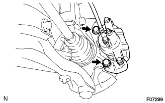
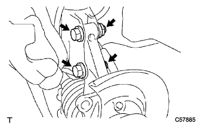
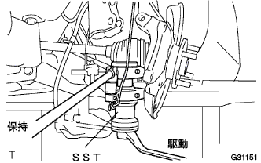

フロントアクスル ハブ LH 取り外し |
| 1. フロントタイヤ取りはずし |
| 2. フロントアクスル シャフト ナット LH取りはずし |
 |
ドライブシャフトの溝部に合わせてSSTをセットし、ハンマーを使用して、かしめを解く。
ソケツトレンチ(30mm)を使用して、ハブナットを取りはずす。
| 3. スピード センサ FR LH切り離し |
ボルトをはずし、スピードセンサワイヤおよびフレキシブルホースをショックアブソーバASSYから切り離す。
 |
クリップをショックアブソーバASSYから切り離す。
 |
ボルトをはずし、スピードセンサFRをステアリングナックルから切り離す。
| 4. スタビライザ バー FR切り離し |
 |
ボルトをスパナ(10mm)で固定し、ナットを取りはずす。
クッションリテーナNo.1を2個およびクッション2個を取りはずし、スタビライザバーを切り離す。
| 5. タイロッド エンドSUB-ASSY LH切り離し |
コッターピンおよびキャッスルナットを取りはずす。
 |
SSTを使用して、タイロッドエンドをステアリングナックルから切り離す。
| 6. フロントデイスクブレーキキヤリパASSY LH切り離し |
|  |
ボルト2本をはずし、デイスクブレーキキヤリパASSYをステアリングナックルから切り離す。
| 7. フロントディスク取りはずし |
ディスクとアクスルハブに合わせマークを付け、ディスクを取りはずす。
| 8. フロントアクスルASSY LH切り離し |
プラスチックハンマーを使用して、ドライブシャフトASSYの先端を軽くたたき、シャフトとアクスルASSYのかん合をはずす。
フロントアクスルASSYを車両外側に押して、アクスルASSYからドライブシャフトASSYを抜く。
| 9. ショック アブソーバASSY FR LH切り離し |
|  |
ボルト2本およびナット2個をはずして、ショックアブソーバASSYをアクスルASSYから切り離す。
| 10. フロントサスペンション アームSUB-ASSY LWR NO.1 LH切り離し |
コッターピンおよびキャッスルナットを取りはずす。
|  |
SSTを使用して、ロワーアームＮｏ．１のボールジョイント部をステアリングナックルから切り離す。